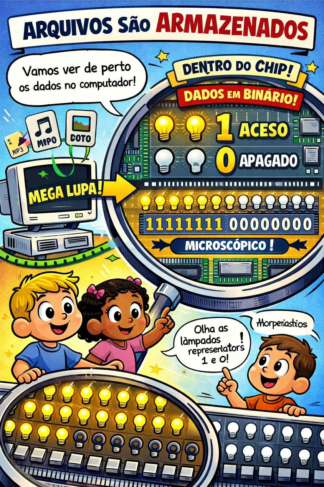

Arquivos têm tamanhos variados, e entender esses tamanhos é importante para gerenciar espaço de armazenamento e transferência de dados.
Se arquivos possuem tamanhos diferentes, precisamos entender do que um arquivo é feito de fato na memória física do computador.
Será que se você salva a palavra "amor" em um arquivo de texto, e você abrir o computador será que você encontra a palavra amor lá dentro?🤔

O sistema binário é a linguagem que os computadores usam para armazenar e processar informações. Diferente do nosso sistema decimal (base 10, com dígitos de 0 a 9), o sistema binário usa apenas dois dígitos: 0 e 1.
Cada dígito binário é chamado de bit (binary digit). Os bits são como interruptores que podem estar ligados (1) ou desligados (0).
Por que binário? Porque os computadores funcionam com eletricidade, e é mais fácil representar dois estados elétricos: corrente passando (1) ou não passando (0).
Todas as informações no computador são convertidas para binário antes de serem armazenadas:
A memória do computador é como uma enorme sequência de interruptores (bits) que podem estar ligados ou desligados, formando padrões que representam nossas informações.
Como os bits são muito pequenos, agrupamos eles em unidades maiores:
Exemplo: A palavra "amor" em binário é 01000001 01101101 01101111 01110010 (32 bits = 4 bytes).
Para medir tamanhos maiores, usamos múltiplos do byte:
| Unidade | Abreviação | Equivalência | Exemplo |
|---|---|---|---|
| Byte | B | 8 bits | Uma letra |
| Kilobyte | KB | 1.000 bytes | Um parágrafo curto |
| Megabyte | MB | 1.000 KB (1.000.000 bytes) | Uma música MP3 |
| Gigabyte | GB | 1.000 MB (1.000.000.000 bytes) | Um filme em HD |
| Terabyte | TB | 1.000 GB (1.000.000.000.000 bytes) | HD externo grande |
Saber sobre tamanhos de arquivo ajuda você a:
Vamos ver alguns exemplos de tamanhos:
Lembre-se: arquivos comprimidos (ZIP) ocupam menos espaço!
Você deve ter notado que os tamanhos de memória sempre seguem um padrão: 2, 4, 8, 16, 32, 64, 128, 256, 512, 1024, etc. Isso não é coincidência!
Esse padrão vem diretamente do sistema binário que os computadores usam.
As memórias do computador são organizadas em endereços. Cada endereço aponta para um local específico na memória.
Com o sistema binário, é muito mais eficiente endereçar a memória usando potências de 2:
Isso permite que o processador acesse qualquer posição da memória de forma rápida e precisa.
Esse padrão aparece em muitos lugares da computação:
Próxima vez que você ver um tamanho de memória, lembre-se: é sempre uma potência de 2 por causa do sistema binário!
No Windows, você pode ver o tamanho de qualquer arquivo:
Para ver o tamanho de uma pasta inteira, clique com o botão direito na pasta e selecione Propriedades.